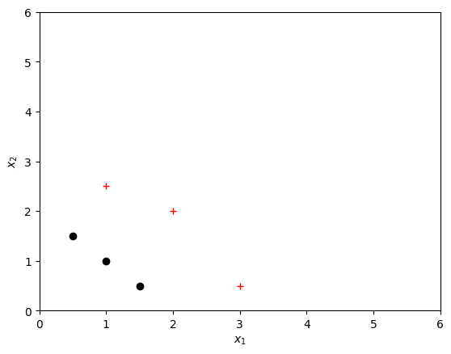
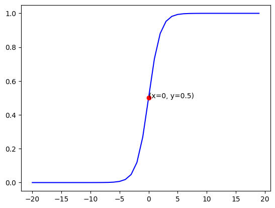

Ungraded Lab: Decision Boundary#
In this lab, you will plot the decision boundary for a logistic regression model, which will give you a better sense of what the model is predicting.
Dataset#
Let’s suppose you have following training dataset
The input variable
Xis a numpy array which has 6 training examples, each with two featuresThe output variable
yis also a numpy array with 6 examples, andyis either0or1
import numpy as np
X = np.array([[0.5, 1.5], [1,1], [1.5, 0.5], [3, 0.5], [2, 2], [1, 2.5]])
y = np.array([0, 0, 0, 1, 1, 1])
Plot data#
Let’s use a helper function to plot this data. The data points with label \(y=1\) are shown as red crosses, while the data points with label \(y=0\) are shown as black circles.
from lab_utils import plot_data
import matplotlib.pyplot as plt
plot_data(X, y)
# Set both axes to be from 0-6
plt.axis([0, 6, 0, 6])
# Set the y-axis label
plt.ylabel('$x_2$')
# Set the x-axis label
plt.xlabel('$x_1$')
Text(0.5, 0, '$x_1$')

Logistic regression model#
Suppose you’d like to train a logistic regression model on this data which has the form
\(f(x) = g(w_0 + w_1x_1+w_2x_2)\)
where \(g(z) = \frac{1}{1+e^{-z}}\), which is the sigmoid function
Let’s say that you trained the model and get the parameters as \(w_0 = -3, w_1 = 1, w_2 = 1\). That is,
\(f(x) = g(-3 + x_1+x_2)\)
(You’ll learn how to fit these parameters to the data further in the course)
Let’s try to understand what this trained model is predicting by plotting it’s decision boundary
Refresher on logistic regression and decision boundary#
Recall that for logistic regression, the model is represented as
\(f(x) = g(w^Tx)\)
where
\(g(z) = \frac{1}{1+e^{-z}}\)
\(g(z)\) is known as the sigmoid function and it maps all input values to values between 0 and 1.
We interpret the output of the model (\(f(x)\)) as the probability that \(y=1\) given \(x\) and parameterized by \(w\).
Therefore, to get a final prediction (\(y=0\) or \(y=1\)) from the logistic regression model, we can use the following heuristic -
if \(f(x) >= 0.5\), predict \(y=1\)
if \(f(x) < 0.5\), predict \(y=0\)
Since, \(f(x) = g(w^Tx)\), let’s plot the sigmoid function to see where \(g(z) >= 0.5\)
We’ve implemented the sigmoid function for you already and you can simply import and use it, as shown in the code block below.
import matplotlib.pyplot as plt
import numpy as np
from lab_utils import sigmoid
# Plot sigmoid(z) over a range of values from -20 to 20
z = np.arange(-20,20)
plt.plot(z, sigmoid(z), c="b")
# Plot and annotate the point where sigmoid(z) = 0.5
plt.plot(0, sigmoid(0), 'ro')
plt.text(0, sigmoid(0), '(x={}, y={})'.format(0, sigmoid(0)))
Text(0, 0.5, '(x=0, y=0.5)')

As you can see, \(g(z) >= 0.5\) for \(z >=0\)
For a logistic regression model, \(z = w^Tx\). Therefore,
if \(w^Tx >= 0\), the model predicts \(y=1\)
if \(w^Tx < 0\), the model predicts \(y=0\)
Plotting decision boundary#
Now, let’s go back to our example to understand how the logistic regression model is making predictions.
Our logistic regression model has the form
\(f(x) = g(-3 + x_1+x_2)\)
From what you’ve learnt above, you can see that this model predicts \(y=1\) if \(-3 + x_1+x_2 >= 0\)
Let’s see what this looks like graphically. We’ll start by plotting \(-3 + x_1+x_2 = 0\), which is equivalent to \(x_2 = 3 - x1\).
Exercise
Complete the code block below by writing x2 = 3-x1
# Choose values between 0 and 6
x1 = np.arange(0,6)
### START CODE HERE ###
x2 =
### END CODE HERE ###
# Plot the decision boundary
plt.plot(x1,x2, c="b")
plt.axis([0, 6, 0, 6])
# Fill the region below the line
plt.fill_between(x1,x2, alpha=0.2)
# Plot the original data
plot_data(X,y)
# Set the y-axis label
plt.ylabel('x2')
# Set the x-axis label
plt.xlabel('x1')
Cell In[4], line 5
x2 =
^
SyntaxError: invalid syntax
In the plot above, the blue line should represent the line \(-3 + x_1+x_2 = 0\) and it should intersect the x1 axis at 3 (if we set \(x_2\) = 0, \(x_1\) = 3) and the x2 axis at 3 (if we set \(x_1\) = 0, \(x_2\) = 3).
The shaded region represents \(-3 + x_1+x_2 < 0\). The region above the line is \(-3 + x_1+x_2 > 0\).
Therefore, for this model any point in the shaded region (under the line) is classified as \(y=0\) and any point on or above the line is classified as \(y=1\). This line is known as the “decision boundary”.
As we’ve seen in the videos, by using higher order polynomial terms (eg: \(f(x) = g(-1 + x_1^2 + x_2^2)\), we can come up with more complex non-linear boundaries.